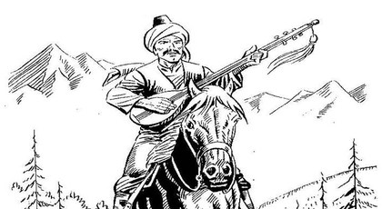

Köroğlu Hikayesi

Bolu Beyi, at meraklısı bir beydir. Atçılıkta usta olan seyisi Yusuf’u,
güzel ve cins at aramak üzere başka yerlere gönderir. Yusuf günlerce gezdikten sonra, obanın birinde istediği gibi bir tay bulur.
Bu tayı doğuran kısrak, Fırat kıyısında otlarken, ırmaktan çıkan bir aygır kısrağa aşmış, tay ondan olmuştur.
Irmak ve göllerin dibinde yaşayan aygırlardan olan taylar çok makbuldür, iyi cins at olur.
Yusuf, tayı sahiplerinden satın alır. Yavrunun şimdilik gösterişi yoktur. Hatta, çirkindir bile. Ama ileride mükemmel bir küheylan olacaktır.
Yusuf bunu biliyor. Sevinerek geri döner. Bey, bu çirkin ve sevimsiz tayı görünce çok kızar, kendisiyle alay edildiğini sanır. Yusuf’un gözlerine mil çektirir.
Tayı da ona verir, yanından kovar. Kör Yusuf köyüne döner. Olanı biteni oğluna anlatır. Bolu Beyi’nden öç alacağını söyler.
Baba oğul, başlarlar tayı terbiye etmeye. Yıllar geçer Tay artık mükemmel bir küheylan olmuştur. Rüzgâr gibi koşmakta, ceylan gibi sıçramakta,
türlü savaş oyunu bilmektedir. Bu arada Kör Yusuf’un oğlu Rıışen Ali de büyümüş, güçlü kuvvetli bir delikanlı olmuştur. O da her türlü şövalyelik
oyunlarını öğrenmiş bir babayiğittir.
Bir gece Yusuf, düşünde Hızır’ı görür. Hızır ona yapacağı işi söyler. Hızır’ın önerisiyle baba oğul yola çıkarlar. Bingöl dağlarından gelecek
üç sihirli köpüğü Aras ırmağında beklerler. Bu üç sihirli köpükle Yusuf’un hem gözleri açılacak, hem intikam almak için gereken kuvvet ve gençliği elde edecektir.
Bunu bilen oğlu Ruşen Ali, köpükler gelince, babasına haber vermeden, kendisi içer. Yusuf, durumu öğrenince üzülür, ama bir yandan da sevinir.
Kendi yerine oğlu, öcünü alacak bir bahadır olacaktır. Bu sihirli köpüklerden biri körün oğluna sonsuz yaşama gücü, biri yiğitlik, öteki de şairlik bağışlamıştır.
Bir süre sonra Yusuf, oğluna öç almasını vasiyet ederek ölür.
Körün oğlu Ruşen Ali dağa çıkar. Gelen geçeni soyar. Ünü yayılmaya başlar. Kendisi gibi kanun kaçakları yanında toplanmaya başlarlar. Artık adı Köroğlu olmuştur.
Bolu şehrinin karşısında, Çamlıbel’de bir kale yaptırır. Küçük bir ordusu vardır. Çamlıbel’den geçen kervanlardan bac alır. Vermeyen kervanları soyar.
Üzerine gönderilen orduları bozguna uğratır.
Bir gün, güzelliğini duyduğu Üsküdar Kasapbaşı’sının oğlu Ayvaz’ı kaçırır, Çamlıbel’e getirir, evlât edinir. Başka bir gün, Bolu Beyi’nin bacısı
Döne Hanım’ı kaçırır, evlenirler. Aradan yıllar geçer. Bolu’yu .basar, yakar, yıkar. Bolu Beyi’nden babasının öcünü alır. Bolu Beyi de Köroğlu’na kargı düzenler kurar.
Bir defasında Köroğlu’nu, başka bir seferde de Ayvaz’ı yakalatır. Zindana atar. Ama, Köroğlu ve adamları her zaman hile ve cenkle kurtulurlar.
Köroğlu, ara sıra Gürcistan, Çin gibi uzak ülkelere de seferler açar. Yeni yeni serüvenlere atılır, büyük vurgunlar yapar. Bu arada küçük, fakat heyecanlı
birçok olay da geçer. Sonunda delikli demir (tüfek) ortaya çıkınca eski bahadırlık geleneği bozulur, dünyanın tadı kalmaz. Ve bir gün Köroğlu, beylerine
dağılmalarını söyleyerek Kırklara karışır, kaybolur. Daha önceden Kır-At da sır olmuştur. O Kır-At ki, nice yıllar, olağanüstü bir güçle Köroğlu’na hizmet etmiştir.
Başka bir söylentiye göre, bir Yahudi bezirganın getirdiği tüfekle oynayan beyler, birbirlerini öldürürler. Köroğlu, buna üzülerek kayıplara karışır.
Yine bir başka söylentiye göre de, Köroğlu dağda rastladığı çobanda tüfeği görür. Sorar, ne olduğunu. Aldığı karşılığa inanmaz. Denemek için kendine çevirir,
tetiğe dokunur. Ve yaralanarak ölür. Sonra beyleri de dağılırlar.
Yaşlı bir çınar gibi devrilen Köroğlu’nun hikâyesi sona erer.